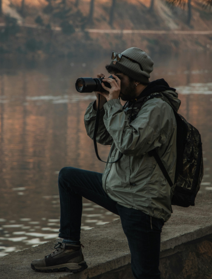
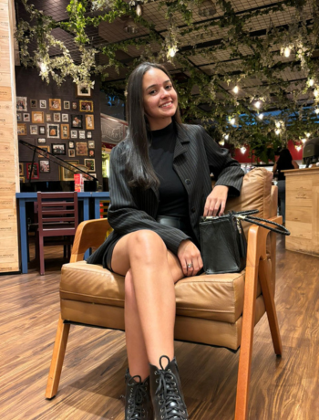
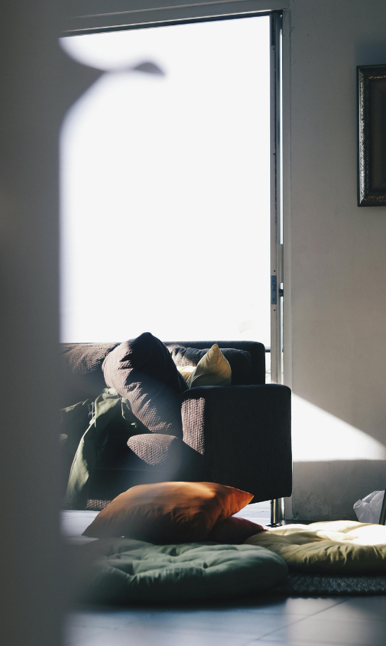
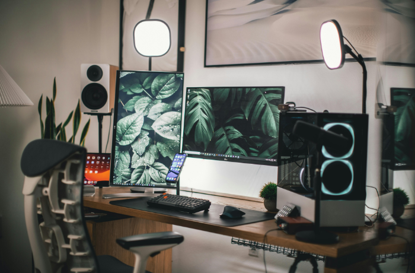
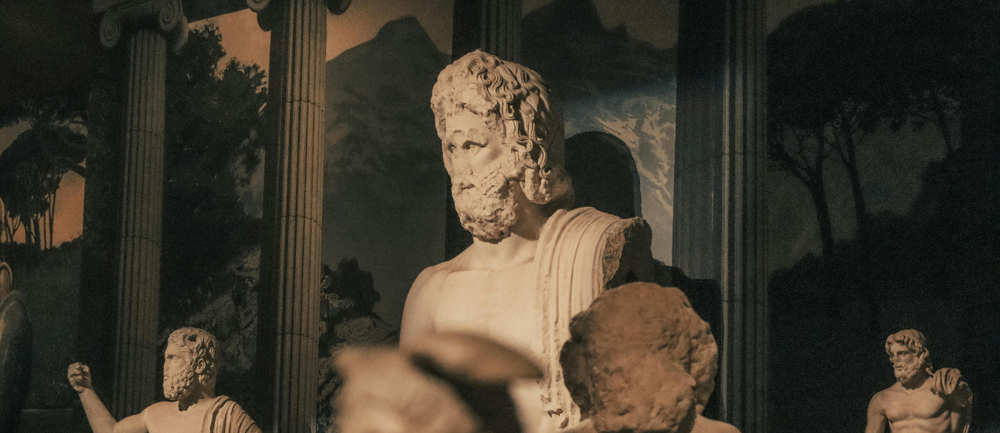

Capturing
The moments that captivate your heart
Noah is a lifestyle, portrait, and documentary photographer from Somerset who now lives and works in London.
About me
I started my career in fashion photography at the age of 18. It was on the sets of high-end brand campaigns and fashion shows that I learned the techniques that have become my signature style. Having always been drawn to sociological documentary photography, I apply my classic and energetic style seamlessly to my portraiture and documentary projects

Featured Works
Art director
2021Photographer
2022videographer
2023Project




